Technicord de préparation
Convoyeurs de dressage réfrigérés ou neutres, à cordes ou à bande.

Le convoyeur réfrigéré de préparation des repas permet le dressage des plateaux ou barquettes sur un convoyeur de 1 à 8 mètres linéaires, à une température de +5 / +10 °C dans une ambiance de +20 / +25 °C.
Compact et mobile, il peut être utilisé dans toutes les configurations de lieux et par tous. Il ne nécessite plus d’être implanté dans une chambre froide, coûteuse et contraignante pour le personnel d’exploitation.
Pour les grandes longueurs, le convoyeur peut être prévu en plusieurs morceaux. L’entretien a été rendu facile grâce à une conception modulaire, avec une accessibilité aisée et totale, sans outil, à tous les organes techniques.
Le pupitre de commande, dans le prolongement du tapis, regroupe toutes les fonctions. La mise en route peut être programmée en différé et une alarme de contrôle de température permet de travailler en toute tranquillité. La version à cordes reprend le principe exclusif du Technicord.
Source : Fiche Technicord de préparation (PDF Sopacom)
Seules les informations figurant dans les documentations Sopacom sont reprises. Les points demandés mais non documentés sont signalés « à confirmer ».
| Versions | À cordes pour plateaux · à bande pour barquettes |
|---|---|
| Modèles | Convoyeur de dressage réfrigéré · convoyeur de dressage neutre |
| Longueur | De 1 à 8 mètres linéaires ; en plusieurs morceaux pour les grandes longueurs |
| Température | +5 / +10 °C dans une ambiance de +20 / +25 °C |
| Vitesse de défilement | Réglable de 3 à 12 m/min, en réfrigéré ou en ambiant |
| Froid | Ventilé, au R134, avec réévaporation des condensats |
| Commande | Pupitre dans le prolongement du tapis · mise en route différée · alarme de contrôle de température |
| Entretien | Conception modulaire, accès sans outil à tous les organes techniques |
| Normes | Présenté par Sopacom comme « totalement conforme aux normes HACCP » dans le dressage, sans interrompre la chaîne du froid |
Source : Fiche Technicord de préparation (PDF Sopacom)
Technicord de préparation en situation.
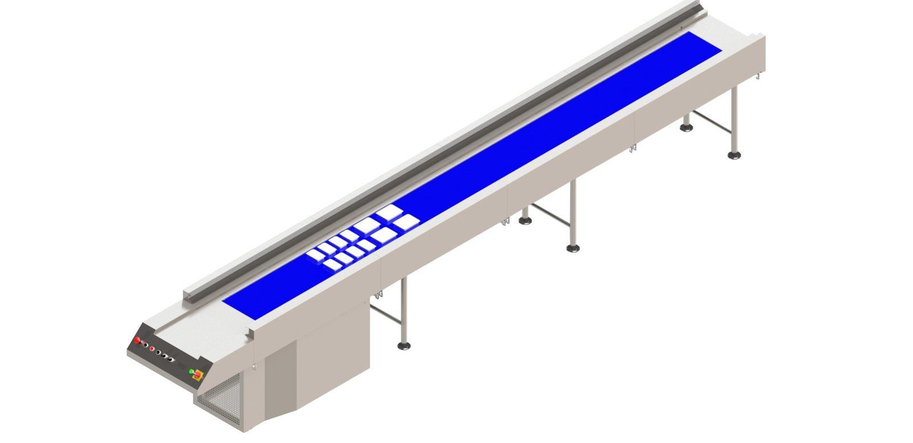
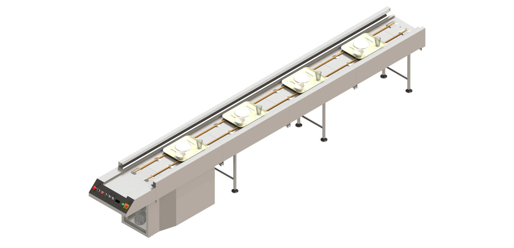
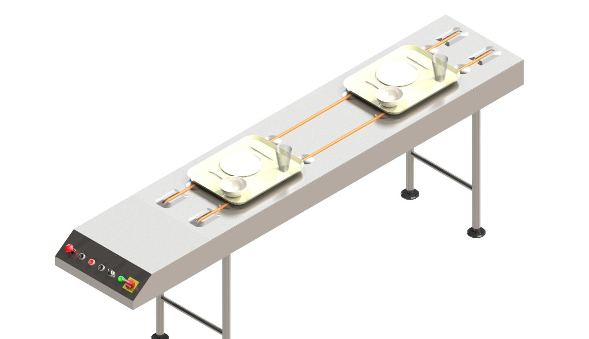
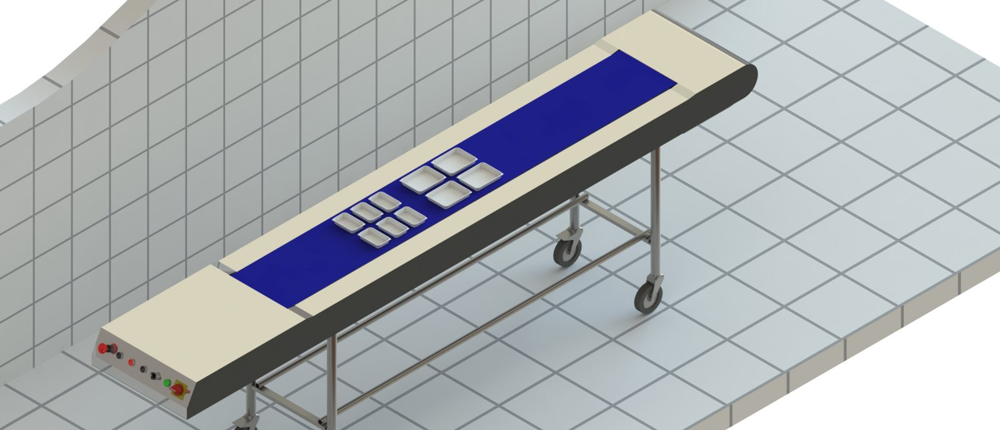
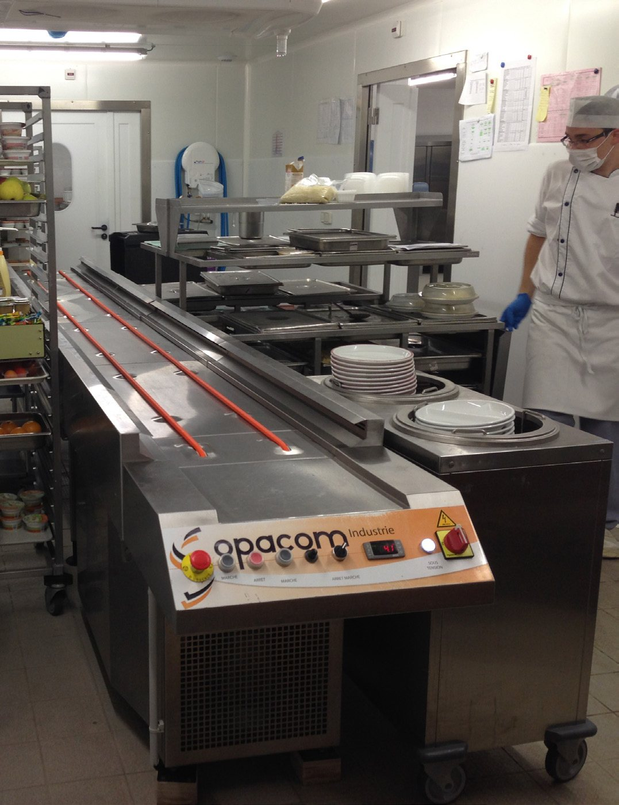
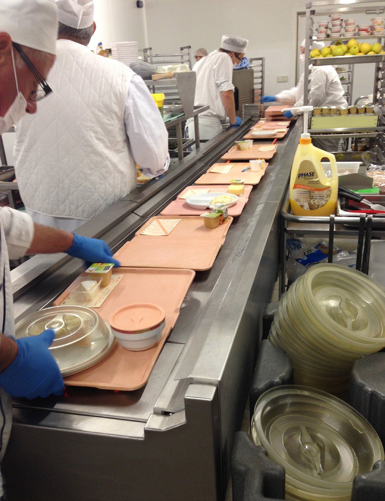
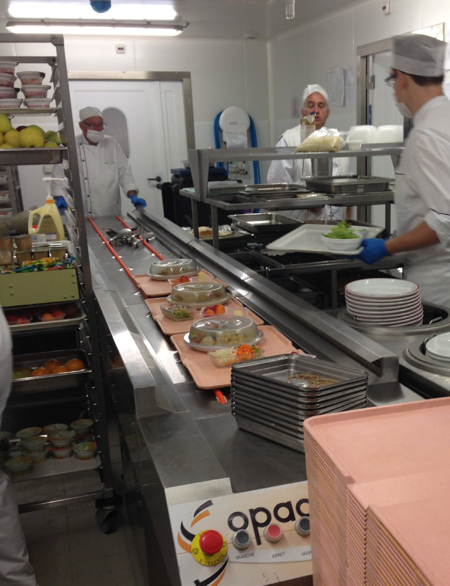
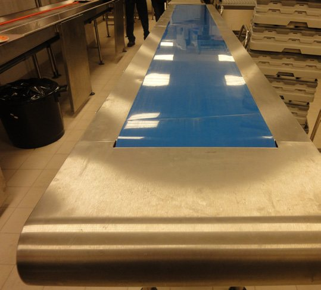
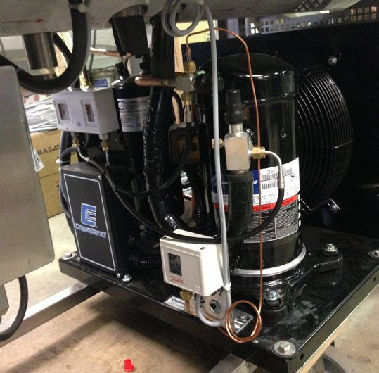
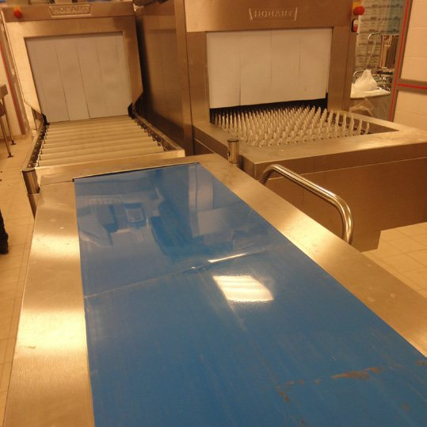
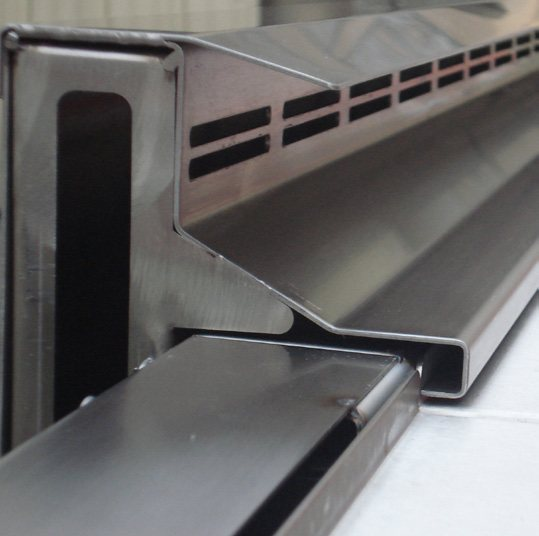
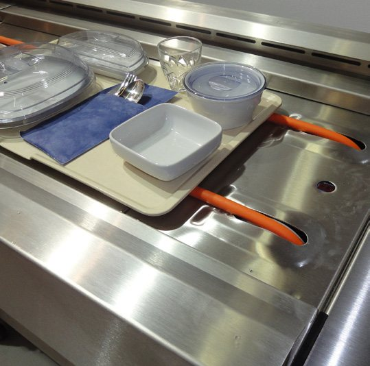
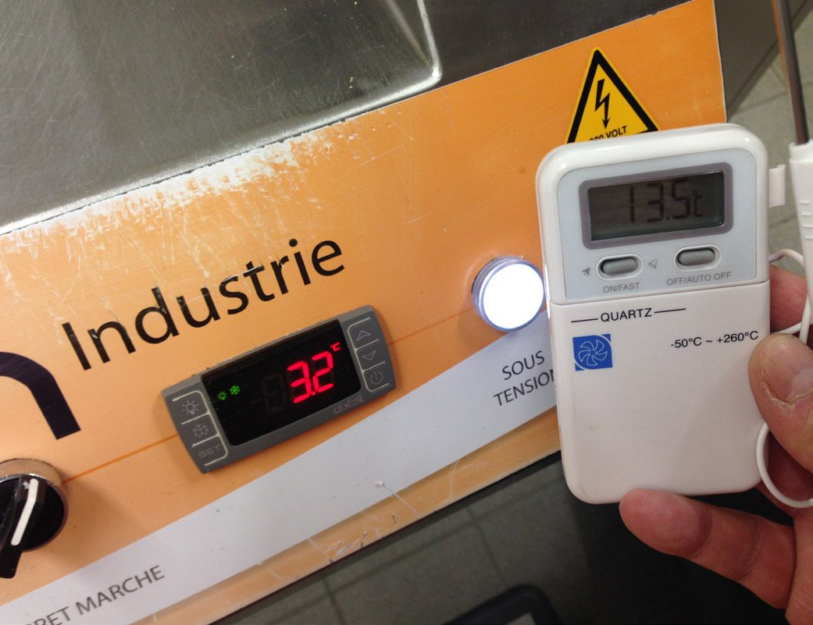
S’intégrer à l’ensemble de la laverie.
Technicord
Version à cordes conçue sur le même principe exclusif que le Technicord.
Source : Fiche Technicord de préparation (PDF Sopacom)
En savoir plus →Sans chambre froide
Utilisable dans toutes les configurations de lieux, sans chambre froide.
Source : Fiche Technicord de préparation (PDF Sopacom)
Équipements raccordables
Un certain nombre d’équipements peuvent être raccordés sur le tapis.
Source : Fiche Technicord de préparation (PDF Sopacom)